4 Simulación Computacional y Análisis de Resultados
Para evaluar la confiabilidad de la red de frío frente a la volatilidad del suministro eléctrico y las condiciones climáticas de Tuxtla Gutiérrez, Chiapas, desarrollamos una simulación en Python enfocado en el equipo institucional Haier HBC-150 presentado en la sección anterior. Debido a la interacción simultánea de múltiples procesos aleatorios (cortes de energía, aperturas de puerta, inercia térmica y consumo logístico), el sistema no posee una solución analítica cerrada. En consecuencia, recurrimos a la integración numérica de trayectorias acoplada al método de Montecarlo.
A diferencia de modelos estáticos tradicionales, esta investigación evalúa el riesgo bajo tres contextos operativos distintos para medir el impacto de la interacción humana:
- Escenario A (Línea Base): Control absoluto sin interacción operativa. Aísla el riesgo provocado exclusivamente por el clima exterior y las fallas de la red eléctrica.
- Escenario B (Apego Normativo): Consumo y aperturas bajo los lineamientos estándar recomendados.
- Escenario C (Contingencia): Estrés operativo severo, modelando alta rotación del inventario y resurtidos aleatorios mediante procesos de Poisson.
Nota sobre Reproducibilidad: Con el fin de mantener este documento con un formato limpio y legible, hemos omitido el código fuente de programación en el texto. Los algoritmos completos para cada escenario se encuentran documentados detalladamente en el repositorio público de GitHub de este proyecto (Pérez, C. 2026a, 2026b, 2026c).
A continuación, explicamos la metodología de la simulación, la estructuración del código y los supuestos físicos considerados (como la inercia térmica del biológico). Posteriormente, presentamos el análisis estadístico y la discusión de los resultados obtenidos para cada escenario.
4.1 Malla Temporal y Clima Exterior
El primer módulo de la simulación establece el tiempo y el clima de Tuxtla Gutiérrez. Creamos una malla de tiempo para cubrir un año bisiesto completo de 366 días. Para capturar los cambios rápidos en la temperatura interna del refrigerador, elegimos un paso de integración discreto de exactamente 5 minutos (\(\Delta t = 5/60\) horas). Esto genera un total de 105,408 iteraciones por cada año simulado.
Para sincronizar el modelo con la logística institucional, programamos un calendario interno que identifica los días hábiles (lunes a viernes) y excluye tanto los fines de semana (sábados y domingos) como los días festivos oficiales. De esta manera, garantizamos que la extracción operativa de vacunas ocurra exclusivamente durante las jornadas laborales reales.
En cuanto al entorno climático, cargamos una base de datos meteorológica real de la ciudad. Sin embargo, los registros públicos solo proveen la temperatura promedio diaria (\(T_{media}\)), lo cual oculta el verdadero estrés térmico que ocurre a lo largo del día. Para solucionar esto, expandimos el dato diario a nuestra escala de 5 minutos utilizando una función senoidal. Calibramos esta función con una amplitud de 7°C, lo que equivale a una variación típica de 14°C entre el frío de la madrugada y el calor máximo de la tarde de Tuxtla Gutiérrez. Además, ajustamos la ecuación para forzar que el pico máximo de la temperatura golpee exactamente a las 15:00 horas de cada día simulado:
\[T_{amb}(t) = T_{media}(t) + 7.0 \cdot \cos\left(2\pi \frac{t - 15}{24}\right)\]
Donde \(t\) representa el tiempo en horas, es decir, \(t \in [0, 8784)\) para un año completo de 366 días.
El resultado de esta oscilación se observa en la Figura 4.1, que muestra el comportamiento térmico para todo el año, y en la Figura 4.2, que demuestra la consistencia del ciclo diurno. Es importante destacar que, dado que el clima de la ciudad es un factor independiente, estas condiciones ambientales y gráficas aplican de manera idéntica para los tres escenarios evaluados (A, B y C).
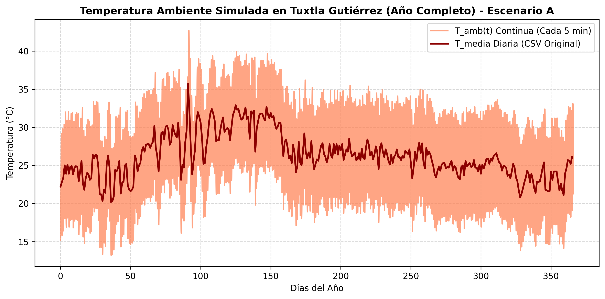
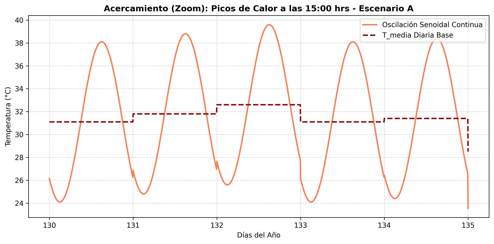
4.2 Parametrización Física, Cinética y Estocástica
Una vez construido el entorno climático, inicializamos las constantes que controlan la termodinámica del equipo institucional Haier HBC-150 y las propiedades fisicoquímicas de las vacunas.
4.2.1 Parámetros Termodinámicos y Biológicos
Asignamos los coeficientes térmicos estimados para la Ecuación Diferencial Estocástica (EDE) de Orstein Uhlenbeck. Alineados a las normativas vigentes, el termostato y la temperatura inicial del equipo se establecen en \(\theta = 5.0^\circ\text{C}\) y \(T_0 = 5.0^\circ\text{C}\). Cuando el equipo tiene suministro eléctrico, la tasa de abatimiento térmico es de \(\kappa_{on} = 0.1154\,\text{hr}^{-1}\), con una volatilidad interna debido a los ventiladores de \(\sigma_{on} = 0.4804\), calculados en la Sección 3.9.1.
Ante una falla eléctrica, el compresor se apaga. El aislamiento de alta densidad del equipo frena la transferencia de calor exterior con una inercia pasiva de \(\kappa_{off} = 0.00232\,\text{hr}^{-1}\) y un ruido por microfiltraciones de \(\sigma_{off} = 0.048\), estimado en la Sección 3.9.2.
Para modelar la degradación biológica, utilizamos la ecuación de Arrhenius (Ecuación 3.19) calibrada para un biológico termosensible representativo. La energía de activación se fija en \(E_a = 85,000\,\text{J/mol}\), la constante de los gases en \(R = 8.314\,\text{J/(mol}\cdot\text{K)}\) y el factor preexponencial en \(A = 1.2 \times 10^{13} \, \text{s}^{-1}\) (obtenidos en la Sección 3.10). Adicionalmente, fundamentados en la termodinámica de fluidos, introducimos un filtro de inercia térmica de 30 minutos; es decir, asumimos que el biológico líquido dentro del frasco de vidrio tarda este periodo en igualar la temperatura interna del equipo, evitando contabilizar falsos daños por picos térmicos breves.
4.2.2 Apertura de Puertas (\(N_{puerta}(t)\))
La interacción humana se modela extrayendo vacunas únicamente durante las jornadas laborales (lunes a viernes). Para evaluar el impacto logístico, la simulación adapta estas perturbaciones dependiendo del contexto operativo (como se vio en la Sección 3.9.3), los tres escenarios de prueba se definen de la siguiente manera:
- Escenario A (Línea Base): No existe interacción humana; la tasa de aperturas es estrictamente cero durante todo el año.
- Escenario B (Apego Normativo): Se programa una apertura determinista a las 8:00 AM para la extracción de dosis diarias. Posteriormente, se activa un proceso de Poisson con intensidad \(\lambda_{tarde} = 0.5 \text{ eventos/hora}\)$ en un horario vespertino de 2 horas (de 15:00 a 17:00 hrs) para las aperturas aleatorias vespertinas de resguardo.
- Escenario C (Contingencia): Además de la extracción matutina y vespertina del Escenario B, se usa otro proceso de Poisson de alta frecuencia (\(\lambda_{resurtido} = 0.4 \text{ eventos/hora}\)) en un horario matutino de 5 horas (de 09:00 a 14:00 hrs) para simular viajes masivos de abastecimiento debido a la saturación del inventario.
Como se analizó en la Sección 3.9.4, cada apertura inyecta aire caliente al interior del equipo. Este impacto se calcula mediante un salto térmico aleatorio \(\gamma_i\), extraído de una distribución Normal truncada (Ecuación 3.18) para reflejar la variabilidad real en el tiempo que la puerta permanece abierta.
4.2.3 Riesgo Eléctrico de la CFE
El riesgo del suministro eléctrico se parametriza utilizando el comportamiento histórico de la Comisión Federal de Electricidad (CFE). Retomando los cálculos de la Sección 3.5, programamos la tasa de fallas diarias \(\lambda_{cfe}(t)\) para el Proceso de Poisson No Homogéneo. Este modelo promedia un aproximado de 64 cortes anuales, combinando un riesgo base constante con dos campanas estacionales que simulan el sobrecalentamiento de transformadores en primavera y la temporada de tormentas en verano:
\[ \lambda_{cfe}(t) = 0.0667 + 0.2314 \cdot \exp\left(-\frac{(t - 152)^2}{4050}\right) + 0.2048 \cdot \exp\left(-\frac{(t - 244)^2}{1800}\right) \]
Para la duración de estos cortes, utilizamos una distribución Log-Normal calibrada por el método de los momentos en la Sección 3.7 para las distintas épocas del año:
- Temporada Base: \(\mu = 0.6766, \ \sigma = 0.6202\)
- Temporada de Calor: \(\mu = 0.9627, \ \sigma = 0.5106\)
- Temporada de Lluvias: \(\mu = 0.4668, \ \sigma = 0.3372\)
4.3 Precalibración Vectorizada de Eventos Externos
Antes de resolver numéricamente la Ecuación Diferencial Estocástica para la temperatura, el algoritmo ejecuta un módulo de precalculo vectorizado para optimizar los tiempos de ejecución. En esta fase, el programa simula de manera independiente las variables externas que afectarán al equipo institucional a lo largo del año.
Para el suministro eléctrico, el algoritmo recorre secuencialmente los 366 días del año. En cada jornada, consulta la intensidad estacional de la CFE y realiza un muestreo aleatorio de Poisson para determinar cuántas fallas eléctricas ocurrirán. Si el resultado es mayor a cero, selecciona una hora de inicio distribuida de manera uniforme entre las 0 y las 24 horas del día, y realiza un muestreo Log-Normal condicionado a la época del año para determinar la duración del corte. Con estos datos, el algoritmo modifica el vector de estado eléctrico \(S(t)\), cambiando su valor de 1 (con energía) a 0 (falla eléctrica) durante el intervalo afectado.
Por otro lado, para modelar las aperturas de la puerta del equipo, se genera un vector binario de eventos evaluado en el dominio de tiempo discreto \(t \in \{0, \Delta t, 2\Delta t, \dots, 8784\}\) horas. Dado que el paso de integración se fijó en \(\Delta t = 5/60\) horas (5 minutos), este conjunto se particiona exactamente en 105,408 iteraciones para cubrir la totalidad del año. Este vector se construye de manera dinámica dependiendo del modelo evaluado: se mantiene nulo para el Escenario A, combina las aperturas matutinas fijas con la probabilidad vespertina (\(\lambda_{tarde} \cdot \Delta t\)) para el Escenario B, y adiciona la perturbación logística de resurtidos (\(\lambda_{resurtido} \cdot \Delta t\)) para el Escenario C.
Posteriormente, el algoritmo aplica una regla estricta de control operativo: multiplica el vector de aperturas por la función de estado eléctrico \(S(t)\), evaluada en el mismo dominio de \([0, 8784]\) horas. Esto garantiza que si el centro de almacenamiento de vacunas se encuentra bajo un apagón en un instante específico (\(S(t)=0\)), la probabilidad de apertura en ese mismo instante de tiempo \(t\) se reduce a cero de forma absoluta. Esto refleja el protocolo normativo real que prohíbe abrir el equipo sin energía eléctrica para evitar la pérdida acelerada de frío.
Finalmente, los eventos validos de apertura de la puerta del equipo se sustituyen por su respectiva magnitud de impacto térmico (\(\gamma_i\)), el cual es extraído de una distribución Normal truncada (Ecuación 3.18), finalizando así el vector discreto de saltos térmicos (\(Saltos\_Termicos(t)\)).
Para validar la correcta precalibración del entorno, ejecutamos una trayectoria anual de prueba fijando una semilla de control (np.random.seed(42)). La simulación generó una trayectoria eléctrica idéntica para los tres casos con un total de 68 apagones en el año, en dónde hubo una notoria diferencia fue en el vector de saltos térmicos: el personal registró 0 aperturas para el Escenario A (Línea Base), 493 aperturas para el Escenario B (Apego Normativo), y 995 aperturas debido a la saturación logística en el Escenario C (Contingencia).
4.4 Resolución Numérica de la Ecuación Diferencial Estocástica (EDE)
Con los vectores de perturbaciones externas precalculados, el algoritmo ejecuta la resolución de la evolución de la temperatura interna del equipo y extrae las métricas de seguridad termodinámica para el equipo institucional.
4.4.1 Integración Numérica por Cambios de Régimen
Para avanzar en el tiempo, el algoritmo recorre cada iteración \(i \in [1, 105407]\). El índice arranca en 1 porque el primer valor corresponde a la condición inicial térmica del equipo (\(T_0 = 5.0^\circ\text{C}\)). En cada paso, se evalúa el estado del suministro eléctrico previo (\(S_{t}[i-1]\)), activando un cambio de régimen dinámico (regime-switching):
- Si el suministro está activo (\(S=1\)), se aplican los parámetros de convección forzada (\(\kappa_{on}, \sigma_{on}\)), llevando la temperatura hacia el objetivo del termostato (\(\theta = 5.0^\circ\text{C}\)) y sumando el salto térmico \(\gamma_i\) si la puerta fue manipulada.
- Si el suministro presenta una falla (\(S=0\)), se aplican los parámetros de inercia térmica pasiva (\(\kappa_{off}, \sigma_{off}\)), provocando que la temperatura interna sea atraída lentamente hacia la temperatura ambiente exterior de Tuxtla Gutiérrez (\(T_{amb}[i-1]\)).
La solución numérica se ejecuta mediante el esquema de Euler-Maruyama desarrollado en la Sección 2.7.1. Es importante destacar que, dado que las volatilidades térmicas (\(\sigma_{on}\) y \(\sigma_{off}\)) actúan como ruidos aditivos constantes (independientes del estado de la temperatura \(T(t)\)), sus derivadas parciales respecto al estado son nulas (\(\frac{\partial \sigma}{\partial x} = 0\)), con lo cual por propiedades del cálculo estocástico, el término de corrección de segundo orden del método de Milstein se multiplica por cero y desaparece, reduciéndose de forma exacta al esquema de Euler-Maruyama empleado en esta simulación.
4.4.2 Resultados de Seguridad Termodinámica
El algoritmo registra cada evento en el que la temperatura interna del equipo cruza los límites normativos de seguridad (por encima de los \(8^\circ\text{C}\) o por debajo de los \(2^\circ\text{C}\)). Es importante destacar que en esta trayectoria de prueba, la temperatura de la simulación nunca descendió por debajo del punto de congelación crítico (\(0^\circ\text{C}\)) en ninguno de los tres escenarios. El cálculo exacto del riesgo para la trayectoria de control inicial (semilla 13) arrojó los siguientes resultados para cada escenario operativo:
Escenario A (Línea Base): * \(T(t)>8^\circ\text{C}\): Se tuvo un total de 40 eventos, sumando un tiempo acumulado de 22.25 horas que representa el 0.25% del año; el primer registro ocurrió en el Día 60.99. * \(T(t)<2^\circ\text{C}\): Se tuvo un total de 13 eventos, sumando un tiempo acumulado de 3.58 horas que representa el 0.04% del año, registrando la primera caída térmica fuera de la norma en el Día 110.25. * Tiempo Total Fuera de Rango: La suma de las excursiones térmicas resultó en un total de 25.83 horas que representa el 0.29% del año operando fuera del rango normativo.
Escenario B (Apego Normativo): * \(T(t)>8^\circ\text{C}\): Se observó un incremento notable con un total de 177 eventos, acumulando un total de 121.83 horas que representa el 1.39% del año; debido a la interacción humana, la primera falla crítica se adelantó drásticamente hasta el Día 4.65. * \(T(t)<2^\circ\text{C}\): Ocurrieron únicamente 3 eventos con un tiempo acumulado de 0.83 horas que representa el 0.01% del año, manteniendo su primer registro en el Día 110.25. * Tiempo Total Fuera de Rango: El equipo operó en condiciones de riesgo durante un total de 122.67 horas que representa el 1.40% del año simulado.
Escenario C (Contingencia): * \(T(t)>8^\circ\text{C}\): El estrés logístico provocó un total de 435 eventos, alcanzando un tiempo acumulado severo de 475 horas que representa el 5.41% del año; al igual que en el escenario anterior, el primer registro de falla ocurrió rápidamente en el Día 4.65. * \(T(t)<2^\circ\text{C}\): Debido a la saturación de calor por aperturas constantes, no se registró ningún evento de enfriamiento excesivo, manteniéndose un acumulado de 0.00 horas. * Tiempo Total Fuera de Rango: En este contexto, el equipo sumó un total de 475 horas operando fuera de rango, lo que representa el 5.41% del año.
4.4.3 Análisis Comparativo de Trayectorias: Visión Macro (Anual)
A continuación, se presentan las soluciones numéricas completas para un año de simulación bajo los tres escenarios.
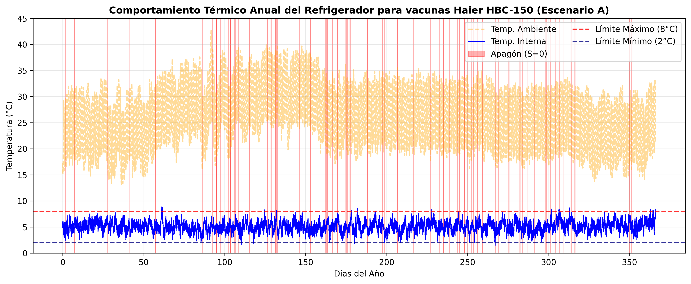
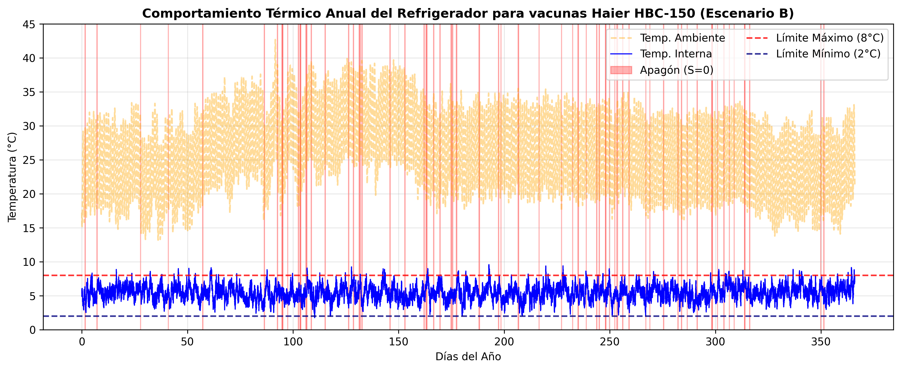
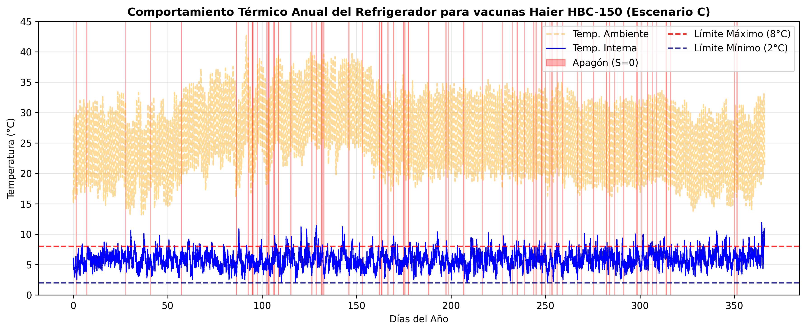
Interpretación Anual: La visualización anual demuestra de forma contundente la sensibilidad del sistema a la interacción humana. En el Escenario A, el aislamiento térmico del equipo y el clima de la región son suficientes para mantener la temperatura segura durante los primeros dos meses (enero y febrero), presentando fallas a partir de la época de calor extremo. Conforme avanzamos al Escenario B y C, el volumen de excursiones superiores a \(8^\circ\text{C}\) crece agresivamente (pasando de 40 a 435 eventos). Esto prueba que el suministro eléctrico de la CFE, aunque deficiente, no es el destructor principal de la cadena de frío, sino el estrés logístico de las aperturas continuas.
4.4.4 Análisis Comparativo de Trayectorias: Visión Micro (Acercamiento Mensual)
Para aislar el comportamiento de la Ecuación Diferencial Estocástica y los impactos térmicos instantáneos (\(\gamma_i\)), se realizó un acercamiento al primer mes de la simulación.
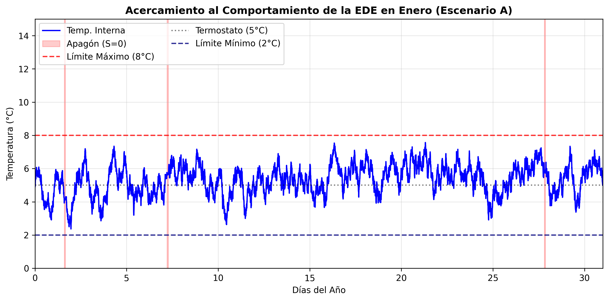
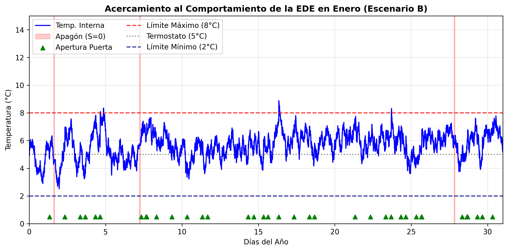
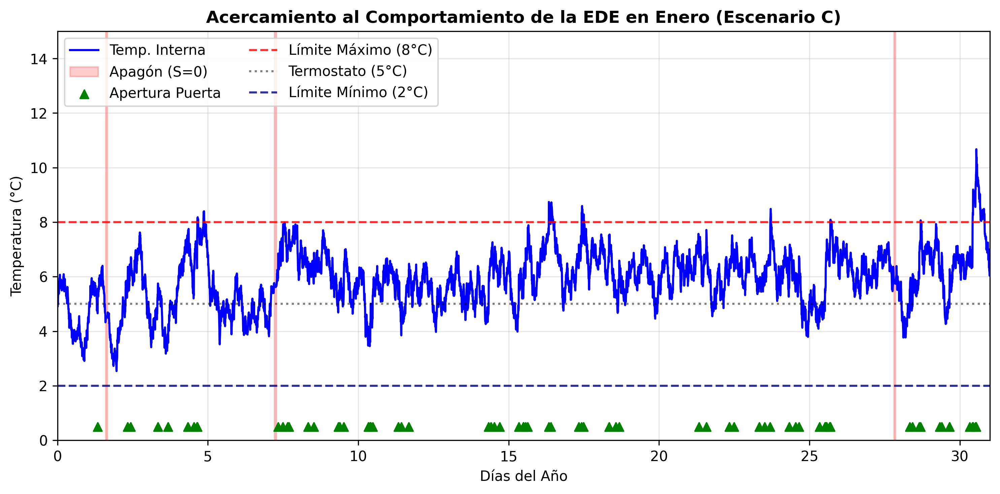
Interpretación Mensual: A nivel mensual, se observa cómo el esquema de Euler-Maruyama resuelve la dinámica de reversión a la media (atracción hacia el termostato de \(5^\circ\text{C}\)). Un hallazgo estadístico notable es la coincidencia exacta del primer evento de excursión crítica en los escenarios B y C (ocurrido en el Día 4.65). Esto no es un error numérico, sino la consecuencia directa del modelo acoplado: en el Día 4.65 en el Escenario B y C ocurrió una apertura vespertina con un impacto térmico (\(\gamma_i\)) alto que provocó que la temperatura del equipo rompiera el umbral de los \(8^\circ\text{C}\).
5 HASTA AQUI
5.0.1 Integración de la Dinámica Logística de Inventario y Mermas
Para pasar de una pérdida de viabilidad teórica a pérdidas de vacunas, acomodamos la simulación al inventario físico real del equipo (\(I_t\)), donde \(t\) representa el tiempo cada 5 minutos. El algoritmo avanza iteración por iteración, utilizando tres características logísticas clave:
- Consumo Mensual Estacional: Si el reloj de la simulación marca exactamente las 8:00 AM en un día hábil, el algoritmo resta la demanda diaria asignada a ese mes (ej. 65 dosis en meses regulares, aumentando a 163 dosis en octubre por Influenza).
- Penalización por Merma Instantánea: En ese mismo paso de tiempo, si la temperatura supera los 8°C, el algoritmo extrae la fracción de pérdida calculada por la ecuación de Arrhenius (\(1 - \exp(-k_t \cdot \Delta t)\)) y se multiplica por el número exacto de vacunas almacenadas en el refrigerador en ese instante. El resultado representa las dosis perdidas, las cuales son restadas del inventario activo y acumuladas en un vector de mermas acumuladas.
- Reabastecimiento Automático: Si el inventario cae por debajo del stock de seguridad o punto de reorden (\(1,000\) dosis), se simula la llegada instantánea del camión de distribución, el cual recarga el equipo hasta su capacidad máxima de \(5,000\) dosis. El algoritmo registra la cantidad exacta de dosis entregadas en la variable
total_dosis_ingresadaspara calcular con precisión la tasa de pérdida global al final de la simulación. La interacción de esta logística con las mermas físicas se visualiza en la Figura 5.1.
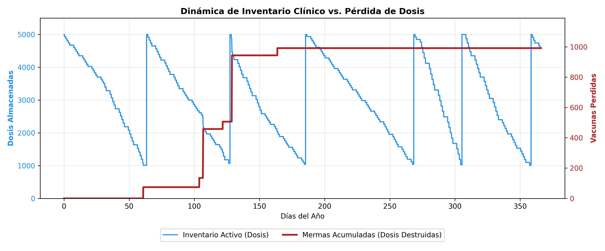
5.1 5. Estructura de la Simulación Montecarlo
Con el fin de obtener validez científica y no depender del escenario de una sola simulación, empaquetamos el algoritmo completo dentro de la función simular_un_ano(semilla). Para optimizar drásticamente la velocidad de ejecución en Google Colab y permitir análisis masivos, vectorizamos la generación del ruido browniano creando el arreglo global de variables normales dW_vec al inicio de la función.
Invocamos esta función dentro de un bucle de Montecarlo con 1,000 simulaciones independientes, asignando en cada iteración una semilla de aleatoriedad indexada (semilla = sim + 42). Al correr 1,000 años simulados, el algoritmo elimina las fluctuaciones extremas de los escenarios individuales y permite que actúe la Ley de los Grandes Números (Ross 2018). Esto provoca que las métricas de control se estabilicen firmemente en promedios realistas: el simulador reportó un promedio global de 64.0 apagones por año (alineado con los datos meteorológicos de la zona de Tuxtla Gutiérrez, Chiapas de la CFE) y un promedio de 515 aperturas de puerta anuales, validando el comportamiento del personal clínico y la infraestructura eléctrica de entrada.
5.2 6. Resultados Estadísticos y Riesgo Operativo
Después de simular las 1,000 trayectorias de Montecarlo, procedemos a realizar el análisis de inferencia estadística para determinar el verdadero nivel de riesgo al que están expuestas las vacunas en Tuxtla Gutiérrez.
El comportamiento de los daños acumulados se aprecia con claridad en las trayectorias aleatorias presentadas en la Figura 5.2. El comportamiento de las curvas demuestra que el riesgo no es lineal; la tendencia de la merma anual depende estrictamente de la coincidencia temporal entre la duración de un apagón de la CFE y el nivel de saturación del almacenamiento de vacunas en ese día específico del año.

Al desglosar las pérdidas de dosis de forma mensual, los datos revelan el verdadero comportamiento del riesgo operativo a lo largo del año, expuesto en la Figura 5.3 (Promedio mensual) y en la Figura 5.4 (Mediana mensual).
Inicialmente, desde un punto de vista puramente logístico, se podría pensar que los meses de otoño (octubre y noviembre) presentarían la mayor cantidad de vacunas perdidas, debido a que en esa temporada el refrigerador opera a su máxima capacidad por el arranque de la campaña nacional invernal contra la Influenza. Sin embargo, la simulación muestra que el factor termodinámico y eléctrico domina por completo al volumen de inventario. Tanto el promedio como la mediana revelan que el verdadero pico de pérdidas materiales se concentra severamente en la temporada de calor extremo: marzo, abril y mayo.
Durante este trimestre, Tuxtla Gutiérrez experimenta sus temperaturas ambientales máximas. Este calor extremo genera un doble impacto en el sistema: por un lado, dispara el estrés sobre la infraestructura de la CFE (debido al uso masivo de aires acondicionados en la ciudad), provocando la mayor tasa de apagones por sobrecalentamiento de transformadores; por otro lado, reduce drásticamente el tiempo de autonomía pasiva del refrigerador apagado, acelerando la cinética de degradación de Arrhenius de las vacunas.
En el gráfico de promedios, estos tres meses resultan casi idénticos en su alto nivel de pérdidas, confirmando que la primavera es la temporada crítica. Al observar la métrica de la mediana (estadísticamente más robusta porque aísla los años atípicamente catastróficos), el mes de abril sobresale como el periodo donde la pérdida de vacunas es superior a la de los otros meses. Queda comprobado que la red de frío chiapaneca es altamente vulnerable al choque térmico primaveral, superando cualquier riesgo derivado de la saturación logística de otras temporadas.
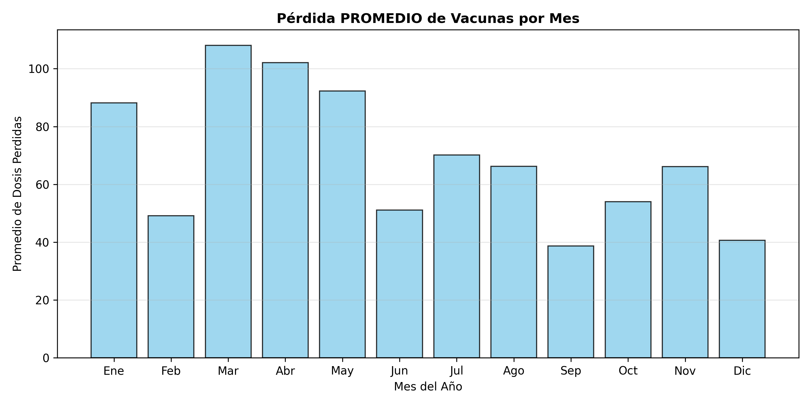
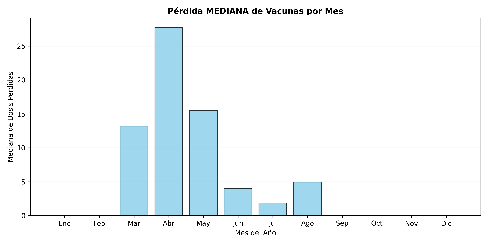
Finalmente, para estandarizar el riesgo sin importar la escala de la unidad médica, transformamos las dosis destruidas en porcentajes relativos respecto al volumen total de vacunas manejadas por el equipo en el año. Al hacer las 1,000 simulaciones, el algoritmo arrojó el histograma presentado en la Figura 5.5. La distribución presenta una asimetría positiva (cola estirada hacia la derecha), comportamiento típico de los sistemas de riesgo operativo expuestos a fallas intermitentes severas.
Los estadísticos descriptivos e inferenciales del modelo revelan que:
- La mediana de mermas anuales se ubica en 751 dosis, lo que representa una tasa de pérdida del 2.57% de los lotes administrados.
- El promedio de mermas anuales se eleva a 827 dosis (tasa del 2.87%), el cual es mas alto por la presencia de años atípicamente catastróficos en la cola de la distribución.
- El Value at Risk (VaR) al 95% de confianza (riesgo severo) advierte que los centros de almacenamiento de vacunas se enfrentan a escenarios extremos donde se perderán hasta 1,736 dosis en un solo refrigerador institucional.
A partir de los percentiles del histograma, podemos concluir con un 95% de nivel de confianza (Intervalo de Predicción) que un centro de almacenamiento de vacunas en Tuxtla Gutiérrez, operando con un equipo normado por la OMS de última generación (Haier HBC-150), sufrirá una pérdida inevitable de entre el 0.72% y el 6.57% de su inventario anual debido a las condiciones climáticas locales y las condiciones eléctricas.
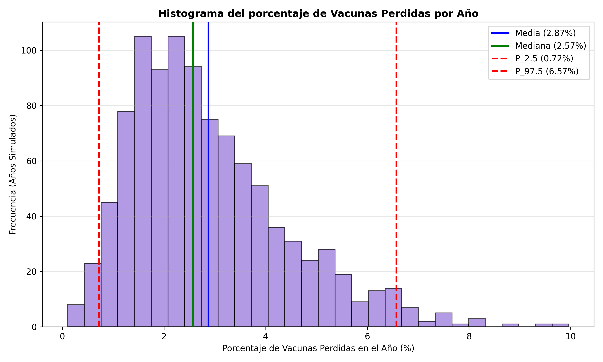